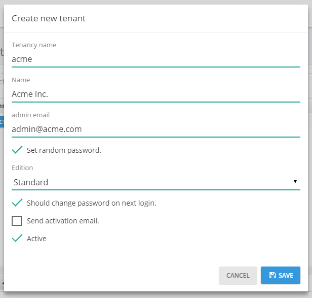
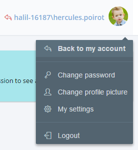

In Getting Started document, a new sample project is created named "Acme.PhoneBook". This document is a guide while developing your projects. We definitely suggest to ready this document before starting development. Since ASP.NET Zero is built on ASP.NET Boilerplate application framework, this document highly refers it's documentation.
Before reading this document, it's suggested to run the application and explore user interface. This will help you to better understand concepts defined here.
When you create and download your project, there will be a solution structure as shown below:
There are 6 projects in the solution:
ASP.NET Zero solution contains three applications:
So, back-end application is built in two different architectures (SPA and MPA). You can choice the one you are comfortable. If you just want to build a SPA, you can safely remove MPA files from your project, or vice versa.
Multi-tenancy is used to build SaaS (Software as a Service) applications easily. Wtih this technique, we can deploy single application and single database to serve to multiple customers. Each Tenant will have it's own roles, users and settings.
ASP.NET Zero's all code-base is developed to be multi-tenant. But, it can be disabled with a single line of configuration if we're developing single-tenant application. When you disable it, all multi-tenancy stuff will be hidden and not available. If multi-tenancy is disabled, there will be a single tenant named Default.
There are two types of perspective in multi-tenant applications:
ASP.NET Zero uses ABP's (ASP.NET Boilerplate) data filters. So, it automatically filters tenant datas if you properly use filter interfaces. Read data filters documentation carefully if you are building multi-tenant applications.
ASP.NET Zero contains front-end pages that can be a starting point for your public web site or a landing page for the application. When you first run the project, you will see the Home Page as shown below:

There are two pages here: Home Page and About. Contents of these pages are just placeholders and for demo purposes. You can completely remove content and build your page as your needs. Also, you should change the logo with your Company's logo.
See metronic front-end theme for all possibilities and components to build a richer web site.
Menus are defined in FrontEndNavigationProvider class. When you add a new menu item here, it will be automatically shown in the menu. There is a Login link at the top right corner. This link takes us to the Login page to enter to the backend application.
Layout of front-end pages are located under Views/Layout folder of the .Web project:

_Layout is the main layout file that includes scripts and styles. Language flags and the menu is rendered in _Header file. _PreFooter is not used but you can add it to the _Layout if you want.
AccountController provides login, register, forgot password and email activation pages.
Account management pages have a seperated _Layout view under Views/Account folder:

Main view for AccountController is the Login page:

The first input is tenancy name which is shown only in a multi-tenant application if "subdomain tenancy name detection" is not possible (See host settings section). There is a single tenant named Default in the initial database (See Entity framework section for initial seed data). Leave tenancy name input as blank to login as host.
We can use admin user name and 123qwe password in first run the application. At first login, we should change admin password since 123qwe is not very secure:

After changing password we are redirected to the Angular application.
ASP.NET Zero supports social media logins. To enable it, we should change the following settings in web.config file.
<add key="ExternalAuth.Facebook.IsEnabled" value="false" />
<add key="ExternalAuth.Facebook.AppId" value="" />
<add key="ExternalAuth.Facebook.AppSecret" value="" />
<add key="ExternalAuth.Twitter.IsEnabled" value="false" />
<add key="ExternalAuth.Twitter.ConsumerKey" value="" />
<add key="ExternalAuth.Twitter.ConsumerSecret" value="" />
<add key="ExternalAuth.Google.IsEnabled" value="false" />
<add key="ExternalAuth.Google.ClientId" value="" />
<add key="ExternalAuth.Google.ClientSecret" value="" />
We can seperately enable and configure each social media. To learn 'how to obtain social media API keys for your application', you can check this document or search web for it. There are many resources on the web. So, we will not go to details of creating apps on social medias. Once you get your keys, you can write them into web.config. When you enable it, social media logos are shown on the login page:

Then we can click social media icons to login with our existing accounts. Check Startup class to see where these configuration is used. You can add more social medias yourself.
When we click the "Create Account" link in the login page, a registration form is shown:

A user can be register for a tenant, not for host if this is a multi-tenant application. If it's single-teant, there will be no tenancy name input here.
Recaptcha (security question) is optional. It uses Google's recaptcha service. Recaptcha service works per domain. So, to make it properly work, you should create your own private and public keys for your domain on https://www.google.com/recaptcha and replace keys in web.config file.
When a user registers as shown above, an email confirmation code is sent to his email address. If user did not receive this email for some reason, he can click Email activation and re-send the confirmation code.

Again, Tenancy name input is not shown for a single-tenant application or tenant name is known via subdomain (like tenancyname.mydomain.com).
If a user forgots his password, he can click the "Forgot Password" link to get an email to reset the password.

The backend in ASP.NET Zero is a Single-Page AngularJs Application. When you login, you are redirected to the ApplicationController. It returns the layout view of the application.
All view, script and styles files are located in App folder (all folders/files are not shown here):

There are three main folders here:
So, if we have a view, directive, service, image... used by both tenants and host, we should place it under common folder as shown above. We should place tenant or host specific directives, services.. under it's own folder, no to common. If you're developing a single-tenant application, you can place your files under tenant.
Application's main menu is defined in AppNavigationProvider class. See ABP's navigation documentation to have a deep understanding on creating menus.
app.js is entrance point of the application. We define the app angular module and angular routes in this file. Angular ui-router is used for routing. Routes (states in ui-router) is dynamically defined based on current user's permissions (see authorization section). Example:
if (abp.auth.hasPermission('Pages.Administration.Tenant.Settings')) {
$stateProvider.state('tenant.settings', {
url: '/settings',
templateUrl: '~/App/tenant/views/settings/index.cshtml',
menu: 'Administration.Settings.Tenant'
});
}
Conditional routing definition prevents user to enter an unauthorized page by just entering a URL to browser's address bar. Menu definition helps us to highlight given menu when this route is activated.
As you see, .cshtml files are used as views. While simply .html files can be used, using .cshtml files allows us to take advantage of Razor's power while creating views.
Layout of the application is located under common/views/layout folder. All scripts and styles in App folder (and subfolders) are bundled (See AppBundleConfig class). So, just add your scripts and styles under App folder, they will be automatically added to the layout.

Layout consists of different parts as shown above. Main menu is rendered in sidebar.
If you're not developing a multi-tenant application, you can skip this section.
Most SaaS (multi-tenant) applications have editions (packages) those have different features. Thus, they can provide different price and feature options to thier tenants (customers). Editions page (available in host login) is used to manage application's editions:

Editions are used to group feature values and assign to tenants. When we click Actions/Edit for an edition, we can see features:

AspNet Zero startup template includes these 3 sample features. You can delete all and create your own features. All features are defined in AppFeatureProvider class. Feature values are stored in AbpFeatures table. See feature management and edition management documents for more information.
If you're not developing a multi-tenant application, you can skip this section.
If this is a multi-tenant application and you logged in as a host user, then tenants page is shown:

A tenant is represented by Tenant class. Tenant class can be extended by adding new properties. There is an only one tenant, named Default as initial. Tenancy Name (code name) is the unique name of a tenant. A tenant can be active or passive. If it's passive, no user of this tenant can login to the application.
When we click the "Create new Tenant" button, a dialog is shown:

Tenancy name should be unique and not contain spaces or other special chars since it may be used as subdomain name (like tenancyname.mydomain.com. See the section below). Name can be anything. Admin email is used as email address of the admin user of new tenant. Admin user is automatically created with the tenant. We can set a random password for admin and send activation email. When user first logins, he/she should change the password. We can uncheck this to enter a known password.
All tenant actions are handled by TenantAppService class. Example (deleting a tenant):
[AbpAuthorize(AppPermissions.Pages_Tenants_Delete)]
public async Task DeleteTenant(EntityRequestInput input)
{
var tenant = await TenantManager.GetByIdAsync(input.Id);
CheckErrors(await TenantManager.DeleteAsync(tenant));
}
TenantAppService mostly uses TenantManager domain service for tenant operations..
An edition can be assigned to a tenant (while creating or editing). Tenant will inherit all features of the assigned edition. But we can also override features and values for a tenant. Click actions/change features for a tenant to customize it's features:

As a host user, we may want to perform operations in behalf of a tenant. In this case, we can click the Actions button of a tenant and select "Login as this tenant" option:

When we click it, we see a modal to select a user of the tenant. We can select any user and perform operations allowed that user. See User Impersonation section in this document for more information.
A multi-tenant application generally uses subdomain to identify current tenant. tenant1.mydomain.com, tenant2.mydomain.com and so on. ASP.NET Zero automatically identify and get tenant name from subdomain (See host settings section).
Organization units (OU) are used to hierarchically group user and entities. Then you can get user or entities based on their OUs. When we click Administration/Organization units, we enter the related page:

Here, we can manage OUs (create, edit, delele, move) and members (add/remove).
OrganizationUnitManager is used to manage OUs, UserManager is used to manage OU members in the code. OrganizationUnitAppService performs the application logic.
In the left OU tree, we can right click to an OU (or left click to arrow at the right) to open context menu for OU operations. When we try to add a member, a modal is shown to select the user:

This is actually a generic lookup modal and can be used to select any type of entity (see App/common/views/common/lookup.js and corresponding view). To select the users, we created FindUsers method in CommonLookupAppService then configured the modal to work with this method (see organizationUnits/index.js file for usage of lookupModal.open).
See organization unit management document for more information.
When we click Administration/Roles menu, we enter to the role management page:

Roles are used to group permissions. When a user has a role, then he/she will have all permissions of that role.
A role is represented by the Role class. Role class can be extended by adding new properties.
RoleManager performs domain logic, RoleAppService performs application logic for roles.
Roles can be dynamic or static:
One or more roles can be set as default. Default roles are assigned to new added/registered users as default. This is not a development time property and can be set or changed after deployment.
In startup project, we have static admin role for host (for multi-tenant apps). Also, we have static admin and user roles for tenants. Admin roles have all permissions granted by default. User role is the default role for new users and has no permission by default. These can be changed easily. See StaticRoleNames class for all static roles and AppRoleConfig for changing static roles.
Since roles are used to group permissions, we can set permissions of a role while creating or editing as shown below (all permissions are not shown here):

(not all permissions shown in the figure above)
Every tenant has it's own roles and any change in roles for a tenant does not effect other tenants. Also, host has also own isolated roles.
When we click Administration/Users menu, we enter to the user management page:

Users are people who can login to the application and perform some operations based on their permissions.
User class represents a user. User class can be extended by adding new properties.
UserManager is used to perform domain logic, UserAppService is used to perform application logic for users.
A user can have zero or more roles. If a user has more than one role, he inherits union of permissions of all these roles. Also, we can set user-specific permission. A user specific permission setting overrides role settings for this permission. A screenshot of user permission dialog (all permissions are not shown here):

(not all permissions shown in the figure above)
A dialog is used to create/edit a user:

We can change user's password, make him active/passive and so on... A user can have a profile picture. It can be changed by the user (See User Menu section). Admin user can not be deleted as a business rule. If you don't want to use admin, you can make it passive.
As admin (or any allowed user), we may want to login as a user and perform operations in behalf of that user, without knowing his password. Click actions of a user and select "Login as this user":

When we click it, we are automatically redirected and logged in as this user. This is called as "user impersonation". When we impersonate a user, a "back to my account" option is added to the user profile menu:

In an impersonated account, we can only perform operations allowed to that user. That means, everything exactly works as same as this user logged in himself. The only difference is shown in audit logs which indicates that operations are performed by somebody else. Notice that; Also a red 'back' icon shown near to the user name to indicate that you are in an impersonated account.
Impersonation is done in AccountController of the Web project.
Language management page is used to manage (add/edit/delete) application languages and change localized texts:

We can create new language, edit/delete an existing language and set a language as default. When we click to Change text for any language, we are redirected to a new view to edit language texts:

We can select any language as a base (reference) and change target language's texts. Since there maybe different localization sources, we select the source to translate. When we click the edit icon, we can see the edit modal for the selected text:

Host users (if allowed) can edit languages and localized texts. These will be default for all tenants for a multi-tenant application. Tenants inherits languages and localized texts and can override localized texts or can add new languages.
Both pages use LanguageAppService class as application service. It has methods to manage languages and localized texts. IApplicationLanguageManager and IApplicationLanguageTextManager interfaces are used to perform domain logic (as used by LanguageAppService).
See language management documentation for more information.
In audit logs page, we can see all user interactions with the application:

All application service methods and MVC controller actions are automatically logged and can be viewed here. See audit logs documentation to learn how to configure it. When we click the magnifier icon, we can see all details an audit log:

Audit log report is provided by AuditLogAppService class.
Host settings page is used to configure some system settings:

Web site root address is important, especially in production. {TENANCY_NAME} is a placeholder for subdomains. It's optional (both for multi and single tenant applications). If supplied, current tenant name is automatically detected.
To make tenancy name subdomains properly work, we should make two configuration beside the application:
There may be other ways of doing it but this is the most simple way.
In host settings page, there are also other settings. SAVE ALL button saves all settings in one click. HostSettingAppService is used to retrieve and save settings (See setting provider section for more information).
In a multi-tenant application, tenant settings are shown as below:

If we disable multi-tenancy, some host settings are shown in this page (since there is no host setting page):

TenantSettingAppService is used to get/set tenant settings.
LDAP (Active Directory) Authentication is disabled by default. To make it work, we should disable multi-tenancy since LDAP auth is not used in a multi-tenant system normally. In CoreModule class in .Core project, we should enable the following line:
Configuration.Modules.ZeroLdap().Enable(typeof(AppLdapAuthenticationSource));
Then, we can see LDAP settings section in settings page:

We can check "Enable LDAP Authentication" to enable it. If the server works in domain and application runs with a domain user or local system, then generally even no need to set Domain name, user and password. You can logout and then login with your domain user name and password. If not, you should set these informations also.
ASP.NET Zero startup project also includes a sample dashboard. It's just for demo purposes, you can make it as a start point for your actual dashboard:

Here, only Member Activity graph data is retrieved from server (from TenantDashboardAppService). You can click the refresh button to generate random graphs.
Notification icon is located next to the language selection button. The number in the red circle shows unread notification count.

User can see 3 recent notifications by clicking this icon.

User can marks all notifications as read by clicking the "Set all as read" link or can mark a single notification by clicking the "set as read" link next to each notification.
"Settings" link opens notification settings dialog.

In this dialog there is a global setting for user to enable/disable receiving notifications. If this setting is enabled, then user can enable/disable each notification individually.
You can also define your custom notifications in AppNotificationProvider class. New user registration notification is defined in the AppNotificationProvider as below.
context.Manager.Add(
new NotificationDefinition(
AppNotificationNames.NewUserRegistered,
displayName: L("NewUserRegisteredNotificationDefinition"),
permissionDependency: new SimplePermissionDependency(AppPermissions.Pages_Administration_Users)
)
);
See notification definitions section for detailed information.
AppNotifier class is used to publish notifications. NotificationAppService class is used to manage application logic for notifications. See notifications documentation for detailed information.
All notifications of user are listed in this page.

A user can click his name at top right corner to open user menu:

Linked accounts are used to link multiple accounts to each other. In this way, a user can easily navigate through his/her accounts using this feature.
User can link new accounts or delete already linked accounts by clicking the "Manage accounts" link.

In order to link a new account, user must enter login credentials of related account.

UserLinkAppService class is used to manage application logic for account linking, UserLinkManager class is used to manage domain logic for account linking.
My settings is used to change user profile settings:

As shown here, admin user name can not be changed. It's considered a special user name since it's used in database migration seed. Other users can change their usernames. ProfileAppService is used to get/change settings.
A user can change own profile picture. ProfileController is used to upload and get user profile pictures. Angular file upload module used to select and upload profile picture to the server. Currently, only jpg/jpeg files are supported, you can extend it.
ProfileAppService is used to change password.
AccountController is used to logout the user and redirect to Login page.
Same backend application is also available as a MPA using ASP.NET MVC, Web API and jQuery. All functionallity is identical with SPA Angular application. It uses same application services to perform actions. This is a screenshot from the application:

Since all functionallity is identical, you can read the SPA section above to understand the application. Here, only differences will be explained.
This application is included in the .Web project as a seperated Area as shown below:

This is a classic MVC folder structure with Controllers, Models and Views.
Application's main menu is defined in MpaNavigationProvider class. See ABP's navigation documentation to have a deep understanding on creating menus.
Layout of the application is located under Views/Layout folder.

Header, footer and siderbar is developed as partial views.
Both SPA and MPA applicationg highly use AJAX to provide a better user experience. They calls application service methods via AJAX. So, it's needed to create web API controllers as adapter (A Client calls Web API Controller action via AJAX, then it calls application service method).
ABP framework automatically creates dynamic web API layer using application service interface definitions. So, there is no web API Controller actually. We build dynamic web api controllers in PhoneBookWebApiModule class in .WebApi project. See dynamic Web API layer documentation for more.
While ABP dynamically create Web API Controllers, we can also create regular Web API Controllers as we always do.
ASP.NET Zero User Interface is completely localized. AspNet Zero uses dynamic, database based, per-tenant localization (See the related section above).
XML files are used as base translation for desired languages:

PhoneBook will be your ProjectName. There are some language files here. You can add more XML files by copying one XML file and translate to desired language. Notice that these XML files should be embedded resource. See valid culture codes.
When you are adding a new localizable text, add it to the XML file of the default language then use in your application (Also, add translated values to corresponding XML files). No need to add it to database migration code since value in the XML file will be used as default.
Application languages are defined in DefaultLanguagesCreator class. This is used as a seed data in Entity Framework Migration. So, if you want to add a new language, just add it into DefaultLanguagesCreator class. Also, you can add a corresponding XML file as described above as default translation.
See localization and language management documentations for more information.
ASP.NET Zero template uses EntityFramework code-first and migrations. PhoneBookDbContext (YourProjectDbContext for your project) defines the DbContext class. Migrations folder contains EF migrations.
PhoneBookRepositoryBase class is the base class for your custom repositories. See entity framework integration documentation for more.
Authorization system is based on permissions. AppPermissions contains constants for permission names and AppAuthorizationProvider class defines all permissions in the system. We should define a permission here before using it in application layer.
See authorization documentation to learn how to configure permissions.
AppFeatureProvider class defines features of the application. Feature names are defined in AppFeatures class as contants. There are some sample features in the template. You can safely delete all and define your own features.
See feature management documentation to learn how to define and use features.
Every setting has a unique name. Setting names are defined in AppSettings class as constants. All settings and their default values are defined in AppSettingProvider class.
See setting documentation to learn how to create and use settings.
Menus are dynamically generated using definitions in AppNavigationProvider class. We have two menus: Main (the main menu in Angular application) and FrontEnd (Main menu in front-end web site).
See navigation documentation for more information.
ASP.NET Zero uses Log4Net for logging as default. Configuration is defined in log4net.config file in the .Web project. It writes all logs into Logs folder of web site as default. When you publish your project, remember to configure write permission to Logs folder.
Check logging documentation to see how to inject ILogger and write logs.
ASP.NET Zero uses AutoMapper for DTO to Entity mappings (and other types of object-to-object mappings). We use Abp.AutoMapper library that makes usage of AutoMapper simpler and declarative.
See the DTO class that is used to transfer a tenant editing information:
[AutoMap(typeof (Tenant))]
public class TenantEditDto : EntityDto, IDoubleWayDto
{
[Required]
[StringLength(Tenant.MaxTenancyNameLength)]
public string TenancyName { get; set; }
[Required]
[StringLength(Tenant.MaxNameLength)]
public string Name { get; set; }
public bool IsActive { get; set; }
}
Here, AutoMap attribute automatically creates mapping between TenantEditDto and Tenant classes. Then we can automatically convert a Tenant object to TenantEditDto object as shown below:
[AbpAuthorize(AppPermissions.Pages_Tenants_Edit)]
public async Task<TenantEditDto> GetTenantForEdit(EntityRequestInput input)
{
return (await TenantManager.GetByIdAsync(input.Id)).MapTo<TenantEditDto>();
}
MapTo method does mapping. See Data Transfer Objects documentation for more information on DTOs.
ASP.NET Zero sends emails to users in some cases (like forgot password and email confirmation). Email template is defined in EmailTemplates folder of .Application project (default.html). You can change default email tamplete here.
Email sending is disabled in DEBUG mode. Because, development environment may not be configured properly to send emails. You can enable it if you want. It's enabled in RELEASE mode.
User profile pictures are stored in database, instead of file system. But it's not stored in Users table for performance reasons (Users are frequently retrieved from database, but profile pictures are rarely needed).
A general-purpose binary saving mechanism built in ASP.NET Zero. BinaryObject entity can be used to save any type of binary objects (byte arrays). Since a profile picture can be converted to a byte array, user profile pictures are saved here.
IBinaryObjectManager interface defines methods to save, get and delete binary objects. DbBinaryObjectManager implementes it to save binary object in database. For example, ProfileController uses IBinaryObjectManager to get current user's profile picture from database.
It's common to use the soft-delete pattern which is used to not delete an entity from database but only mark it as 'deleted'. So, if an entity is soft-deleted, it should not be accidently retrieved into the application. ABP's data filters make this automatically.
In ASP.NET Zero, Tenants, Users and Roles are soft-deleted. See ABP's data filter documentation for more information about this topic.
ASP.NET Zero uses ASP.NET Optimization for bundling & minifying script and style files. Bundles are defined in different files:
Also, see ScriptPaths and StylePaths classes. They contains constants for locations of js and css files.
There are some useful base classes used in the application:
It's strongly recommended to inherit one of these classes upon your needs since they really make Logging, Localization, Authorization... easier.
AppVersionHelper class is used to define current version of the application in single place. When you change Version here, all projects in the application will be verisoned. Also, version and release date automatically shown bottom left corner in the application pages. This helps us to see running application version always.
AspNet Zero uses cookie based authentication for browsers. However, if you want to consume Web APIs or application services (those are exposed via dynamic web api) from a mobile application, you probably want a token based authentication mechanism. AspNet Zero includes bearer token authentication infrastructure. AccountController in .WebApi project contains Authenticate action to get the token. Then we can use the token for next requests.
Here, Postman (chrome extension) will be used to demonstrate requests and responses.
Just send a POST request to http://localhost:6234/api/Account/Authenticate with Context-Type="application/json" as shown below:

We sent a JSON request body includes tenancyName, userNameOrEmailAddress and password. tenancyName is not used to authenticate as a host user. As seed above, result property of returning JSON contains the token. We can save it and use for next requests.
After authenticate and get the token, we can use it to call any authorized actions. All application services are available to be used remotely. For example, we can use the User service to get a list of users:

Just made a POST request to http://localhost:6234/api/services/app/user/GetUsers with Content-Type="application/json" and Authorization="Bearer your-auth-token". Request body was just empty {}. Surely, request and response body will be different for different APIs.
Almost all operations available on UI also available as Web API (since UI uses the same Web API) and can be consumed easily.
ASP.NET Zero startup project contains unit and integration tests. Tests are developed using following tools:
Tests cover Domain (core) and Application layers of the project. Open Test Explorer (Test\Windows\Test Explorer in VS main menu) to run unit tests:

These unit tests will be a guide to understand the code. Also, they can be a model while writing your own unit tests for your application's functionalities.
All unit test classes (actually they are integration tests since they work integrated to ABP, EntityFramework, AutoMapper and other libraries used up to application layer) are derived from AppTestBase. It initializes ABP system, mocks database using Effort, creates initial test data and logins to the application for each tests. It also provides some useful common methods for all tests.
Here, a sample unit test in the application:
public class UserAppService_Delete_Tests : UserAppServiceTestBase
{
[Fact]
public async Task Should_Delete_User()
{
//Arrange
CreateTestUsers();
var user = await GetUserByUserNameOrNullAsync("artdent");
user.ShouldNotBe(null);
//Act
await UserAppService.DeleteUser(new IdInput<long>(user.Id));
//Assert
user = await GetUserByUserNameOrNullAsync("artdent");
user.IsDeleted.ShouldBe(true);
}
}
It creates some users to test and then verifies there is a user named "artdent". Then it calls DeleteUser method of the user application service (which is being tested). Finally, checks if user is deleted. Here, User is a Soft Delete entity, so it's IsDeleted property must be true if it's deleted.
You can read this article to understand unit testing better.
Many open source frameworks and libraries are used to build ASP.NET Zero project. Here, a list of all libraries.